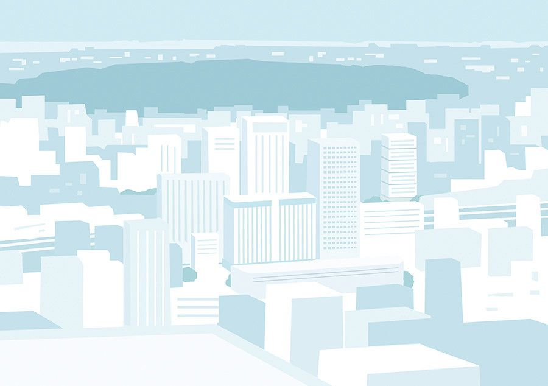

Sugoi es un festival de diseño japones, en donde se presentan antiguas obras de pioneros que contribuyeron con el diseño japones actual, además se presentara Taku Bannai y Yugo Nakamura, los cuales hablaran sobre importantes puntos de la industria del diseño (antes y después). Sugoi nace con el objetivo de hacer un tributo a obras antiguas de diseñadores importantes que marcaron una era.